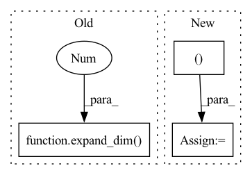

Pattern ID :11888

Before Change
b = bh // h
Wsq = expand_dim(self.linear_sort_q, 0, b).reshape(bh, dim, dim_sort)
Wsk = expand_dim(self.linear_sort_k, 0, b).reshape(bh, dim, dim_sort)
nsk = expand_dim(self.null_sort_k, 0, b).reshape(bh, 1, dim_sort)
q_r = torch.cat((cumavg(q, dim=1), q), dim=-1)
After Change
sq = b_qi @ Wsq
sk = b_ki @ Wsk
sk = F.pad(sk, (0, 0, 1, 0))
R = torch.einsum("bie,bje->bij", sq, sk)
return mask_reordering_matrix(R)
In pattern: SUPERPATTERN
Frequency: 3
Non-data size: 3
Instances
Fragment ID: 39974769
Project Name: lucidrains/sinkhorn-transformer
Commit Name: a3d36f7cdf5b9a134787caf42ce18b5b28b0ddc5
Time: 2020-04-10
Author: lucidrains@gmail.com
File Name: sinkhorn_transformer/sinkhorn_transformer.py
M Class Name: CausalAttentionSortNet
N Class Name: CausalAttentionSortNet
M Method Name: forward(3)
N Method Name: forward(3)
M Parent Class: nn.Module
N Parent Class: nn.Module
M File Name: sinkhorn_transformer/sinkhorn_transformer.py
N File Name: sinkhorn_transformer/sinkhorn_transformer.py
M Start Line: 354
M End Line: 371
N Start Line: 365
N End Line: 380
'>
Before Change
b_q = bucket(buckets, q) if self.n_sortcut == 0 else bucket(1, q)
b_k = bucket(buckets, k)
Wsq = expand_dim(self.linear_sort_q, 0, b).reshape(bh, dim, dim_sort)
Wsk = expand_dim(self.linear_sort_k, 0, b).reshape(bh, dim, dim_sort)
b_qi, b_ki = b_q.mean(dim=2), b_k.mean(dim=2)
After Change
Wsq, Wsk, pos_q, pos_k = map(partial(expand_batch_and_merge_head, b), (self.linear_sort_q, self.linear_sort_k, self.q_pos_emb, self.k_pos_emb))
b_qi = torch.cat((b_q.mean(dim=2), pos_q), dim=-1)
b_ki = torch.cat((b_k.mean(dim=2), pos_k), dim=-1)
sq = b_qi @ Wsq
sk = b_ki @ Wsk
'>
Fragment ID: 39974771
Project Name: lucidrains/sinkhorn-transformer
Commit Name: a3d36f7cdf5b9a134787caf42ce18b5b28b0ddc5
Time: 2020-04-10
Author: lucidrains@gmail.com
File Name: sinkhorn_transformer/sinkhorn_transformer.py
M Class Name: AttentionSortNet
N Class Name: AttentionSortNet
M Method Name: forward(3)
N Method Name: forward(3)
M Parent Class: nn.Module
N Parent Class: nn.Module
M File Name: sinkhorn_transformer/sinkhorn_transformer.py
N File Name: sinkhorn_transformer/sinkhorn_transformer.py
M Start Line: 203
M End Line: 211
N Start Line: 212
N End Line: 220
'>
Before Change
else:
lq, q = split_index_fn(q)
lk = expand_dim(k, 1, self.local_attn_heads)
lv = expand_dim(v, 1, self.local_attn_heads)
has_local, has_global = map(lambda x: x.shape[1] > 0, (lq, q))
if has_local:
After Change
(lk, k), (lv, v) = map(split_kv_fn, (k, v))
local_expand_heads_fn = lambda t: expand_dim(t, 1, self.local_attn_heads, unsqueeze=False)
lk, lv = map(local_expand_heads_fn, (lk, lv))
k, v = map(lambda t: t.squeeze(1), (k, v))
'>
Fragment ID: 39974763
Project Name: lucidrains/linear-attention-transformer
Commit Name: 75a6cefd9d7facce1ff162dc70138a6e32358f3c
Time: 2020-06-29
Author: lucidrains@gmail.com
File Name: linear_attention_transformer/linear_attention_transformer.py
M Class Name: SelfAttention
N Class Name: SelfAttention
M Method Name: forward(5)
N Method Name: forward(5)
M Parent Class: nn.Module
N Parent Class: nn.Module
M File Name: linear_attention_transformer/linear_attention_transformer.py
N File Name: linear_attention_transformer/linear_attention_transformer.py
M Start Line: 304
M End Line: 320
N Start Line: 308
N End Line: 327